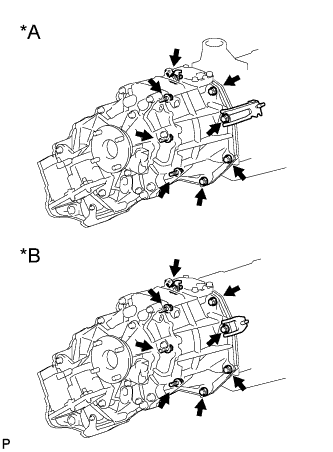
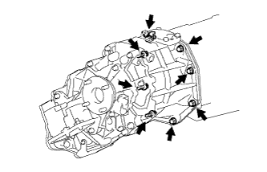
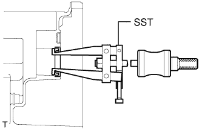
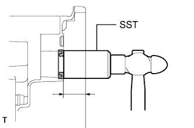

САЛЬНИК ПЕРЕХОДНИКА РАЗДАТОЧНОЙ КОРОБКИ > ЗАМЕНА |
| 1. REMOVE MANUAL TRANSMISSION UNIT ASSEMBLY |
Remove the manual transmission unit (See page Нажмите здесь).
| 2. REMOVE TRANSFER ASSEMBLY |
|  |
Для моделей с 1KD-FTV:
| *A | Для моделей с 1KD-FTV, RA61F |
| *B | Для моделей с 1KD-FTV, A750F |
|  |
Кроме моделей с 1KD-FTV:
Выверните 8 болтов и снимите кронштейн.
Отсоедините раздаточную коробку от трансмиссии.
| 3. REMOVE TRANSFER ADAPTER OIL SEAL |
|  |
Using SST, tap out the oil seal.
| 4. INSTALL TRANSFER ADAPTER OIL SEAL |
Coat the lip of a new oil seal with MP grease.
|  |
Using SST and a hammer, tap in the oil seal.
| 5. INSTALL TRANSFER ASSEMBLY |
Для моделей с 1KD-FTV:
Закрепите раздаточную коробку в сборе с помощью 8 болтов и 2 кронштейнов.
Кроме моделей с 1KD-FTV:
Закрепите раздаточную коробку в сборе с помощью 8 болтов и кронштейна.
| 6. INSTALL MANUAL TRANSMISSION UNIT ASSEMBLY |
Install the manual transmission unit (See page Нажмите здесь).